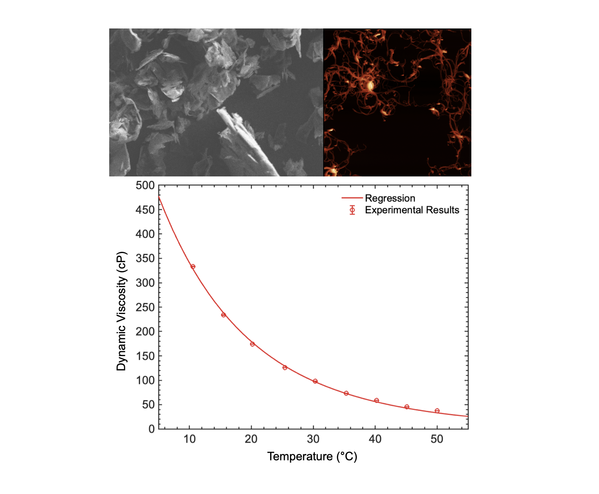

Rheology · Colloids
Multidimensional Colloidal Network Synergy Governing the Thermo-Rheological Behavior of Graphite–MWCNT Hybrid Nanofluids
How sonication and the dimensional complementarity of one-dimensional MWCNTs and two-dimensional graphite govern the temperature-dependent rheology of carbon-based hybrid nanofluids.

Overview
Connecting colloidal organization with flow
This project investigates how sonication and the dimensional complementarity of one-dimensional MWCNTs and two-dimensional graphite govern the temperature-dependent rheology of carbon-based hybrid nanofluids.
The study combines controlled nanofluid fabrication, rheological characterization, and piecewise Arrhenius analysis to connect colloidal organization with macroscopic flow behavior.
Approach
Experimental and analytical approach
- Fabricated MWCNT/graphite hybrid nanofluids under controlled composition and sonication conditions.
- Characterized temperature-dependent rheological behavior across mono- and hybrid-nanoparticle suspensions.
- Developed a MATLAB-based piecewise Arrhenius analysis to identify changes in flow behavior across distinct thermal regimes.

Structural insight
An interconnected network that flows more easily
Two-dimensional graphite acts as nucleation seeds, forming a fractal-like three-dimensional colloidal network that lowers the activation energy for flow.
Sonication-tuned graphite/MWCNT networks reduced flow resistance and temperature sensitivity while maintaining an interconnected structure relevant to conductive transport.
The co-first-author manuscript is under review.
Related patent: Sunghan Kim, Seongmin Hwang, Jongsuk Lee, “Hybrid nanofluid composition with stabilized rheological behavior via multidimensional colloidal structure control, method for preparing the same, and automated quality control system,” Korea Patent Application 10-2026-0189241, filed 2026 (pending).